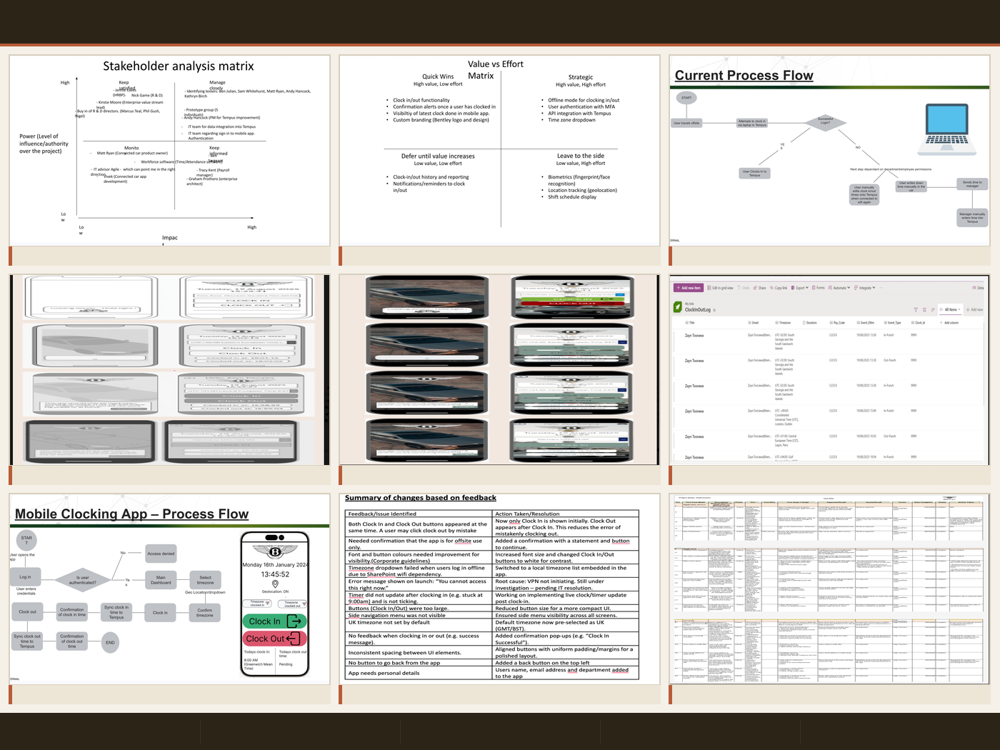
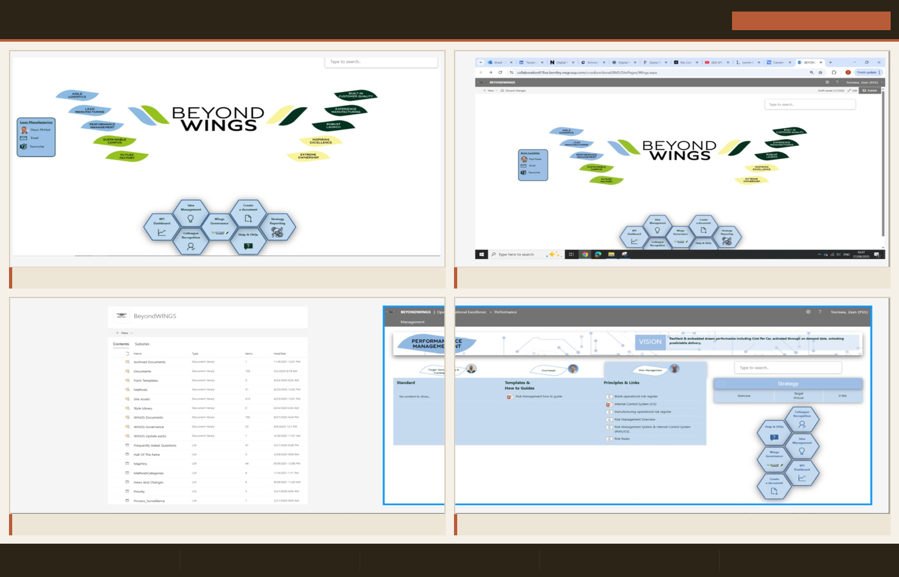
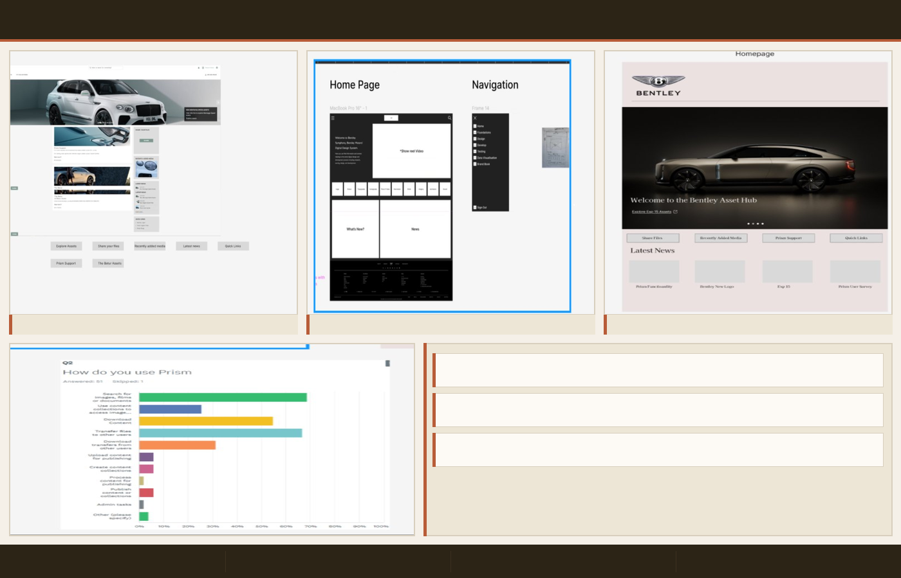
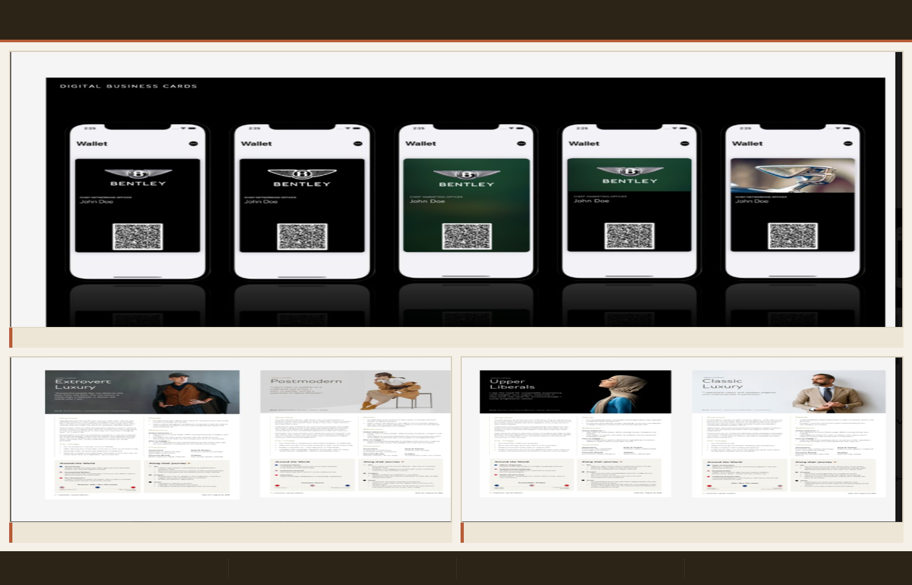
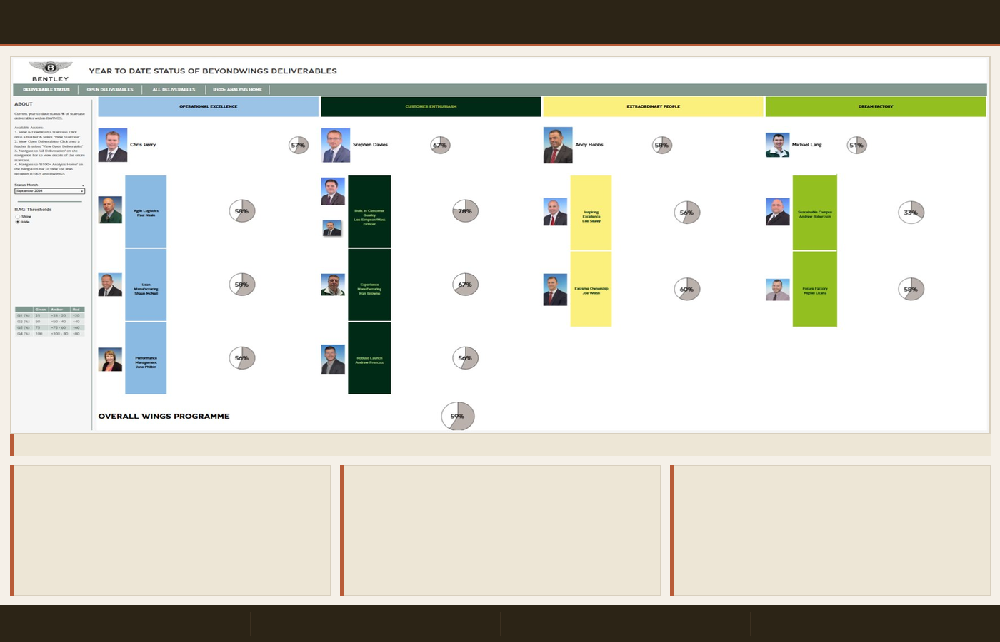

Product Designer & Digital Consultant
No brief needed. I move into a space, understand what's broken, design the solution, and own it through to launch. Based in Preston, working across the North West and beyond.
At a glance
Selected Work
Every project below was led independently — I identified the problem, designed the solution, and owned it through to launch without a PM or BA.

Replaced a broken manual clock-in process for 350+ R&D employees working abroad. Evaluated platforms independently, chose Power Apps, and shipped the entire product solo.
End-to-end redesign of Bentley's internal intranet. Used click tracking to challenge stakeholder assumptions and prioritise user journeys with evidence.


Redesigned an internal image gallery platform — improving content structure, visual hierarchy, and navigability for colleagues sourcing Bentley imagery.
Identified a friction point in colleague networking. Designed a branded QR-based card that auto-populated contact details on scan. Adopted company-wide.


Replaced a manual Excel reporting process with an interactive Tableau dashboard, making complex strategic data accessible to senior leadership across 4 strategic pillars.
About
At Bentley Motors, management would point me at a department with a broken process and say: figure it out. No brief, no PM, no BA. I'd go in, talk to people, find what was actually broken, and design something that fixed it.
That's shaped how I work. I ask questions before I open Figma. I talk to the people who'll actually use what I build. I pick the right tools for the job — not the most obvious ones. And I own the outcome, not just the deliverable.
Now at BAE Systems Digital Intelligence, I work on enterprise HR platforms — collaborating with vendors, gathering user feedback, and delivering iterative improvements in an Agile environment.
BSc (Hons) Digital & Technology Solutions, 2:1 — Manchester Metropolitan University. ITIL Foundation & Agile Fundamentals certified, 2026.
Get in touch
Open to new opportunities in product design, UX, and digital consultancy across the North West. If you're building something that needs to work properly for real people — let's talk.